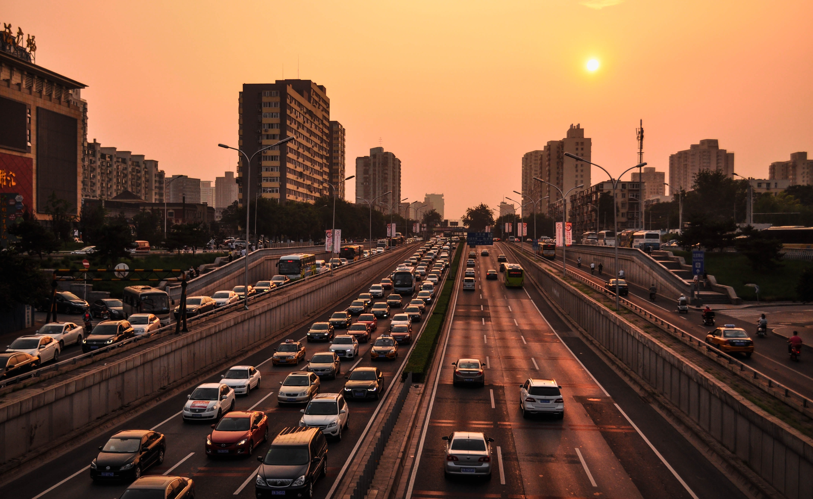

Impact of Technology
Technology is the application of scientific knowledge to make human life easier and comfortable and to change and manipulate the human environment (Britannica, 2021). It is the application of the scientific knowledge in the fields such as industries and used for the development of machinery, equipment. Technology can also be explaned as the branch of knowledge which deals with the engineering or applied sciences. Technology is used in many sectors such as house appliences, daily entertainment, communication devices, infrainstructure development, etc. Technology makes human life more convinient, easy, faster, accurate, and gives chance to explore new things.

Positive effect of technology
1. Computer: computer is one of the greatest piece of technology. We can say that the computer is the main organ of technology which human have developed in this planet. Almost every sector where technology is needed, we can found computer there. It is the most useful technology which is used in engineering to build infrainstructure, it is used in programming sectors to develop programs and softwares. It is used in medical sector, transportation sector, cyber security. There is none sector where computer is not used.
2. Increased productivity of every sector: Technology has influenced industries a lot. Productivity in industrial sectors increased immensely due to advancement in the technology.
3. Ease of Acess to Information: with the development of World wide web, acess to information has become a lot easier. With just a click, information of whole world will be infront of you. This is because information from all around the globe is widely available on the internet (advergize, 2020).
4. Advantage of Mobility: In today's world, We cannot imagine our live without transportatin vehicles. If there was no any means of transportation in the world then just imagine what the world would be like. To travel just 50 KM it would take several days. Therefore, ease of mobility is one of the greatest advantage of technology (advergize, 2020).

1. Cost Efficiendy
2. Innovating Nature
3. Better Learning Techniques
4. Use of Artificial Intellegence
5. Better communication
Negative effect of technology
1. Psychological effects: Social media is a part of technology which is ment to bring people together, yet it can cause many health issues specially Psychological problems. A study in young adults aged 19-32 years was found to feel more social isolation than those who didn't use social media (johnson, 2020).

2. Depression and anxiety: A research conducted in 2016, found that the pepole who had social media support have low level of depression and anxiety but however, it also increases depression level if the person gets negative interaction (johnson, 2020)

3. Physical health effects: Use of technological device such as mobile phone, TV, laptop, etc can cause many problems including:
1. Eyestrain
2. Poor posture
3. Sleep problems
4. Reduced physical activity
© 2021 Bibek Bhattarai | All rights reserved